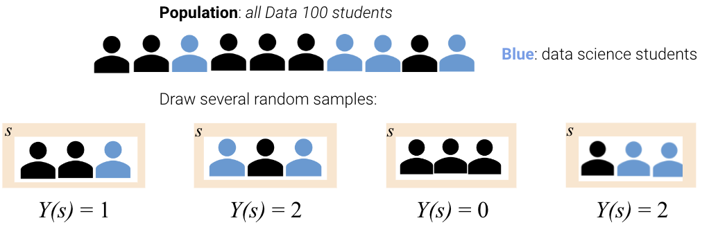
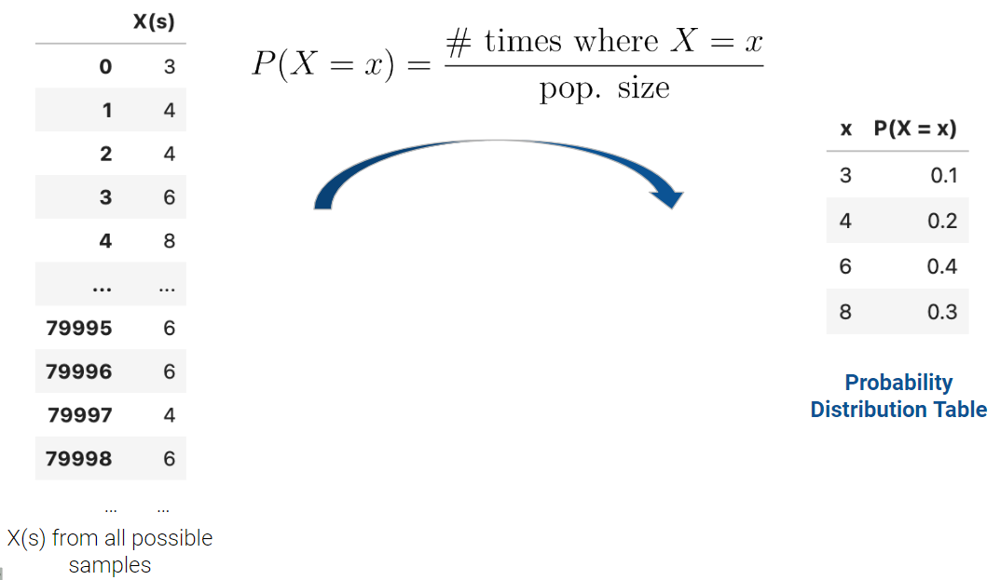
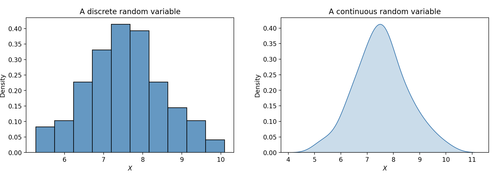
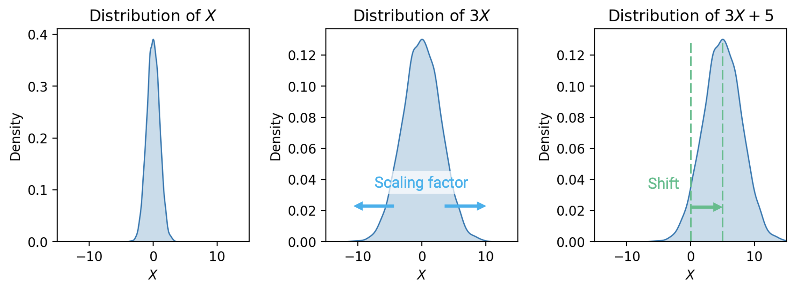

14 Probability I
In the past few lectures, we’ve examined the role of complexity in influencing model performance. We’ve considered model complexity in the context of a tradeoff between two competing factors: model variance and training error.
Thus far, our analysis has been mostly qualitative. We’ve acknowledged that our choice of model complexity needs to strike a balance between model variance and training error, but we haven’t yet discussed why exactly this tradeoff exists.
To better understand the origin of this tradeoff, we will need to introduce the language of random variables. The next two lectures of probability will be a brief digression from our work on modeling so we can build up the concepts needed to understand this so-called bias-variance tradeoff. Our roadmap for the next few lectures will be:
- Probability I: introduce random variables, considering the concepts of expectation, variance, and covariance
- Probability II: re-express the ideas of model variance and training error in terms of random variables and use this new pespective to investigate our choice of model complexity
Let’s get to it.
14.1 Random Variables and Distributions
Suppose we generate a set of random data, like a random sample from some population. A random variable is a numerical function of the randomness in the data. It is random from the randomness of the sample; it is variable because its exact value depends on how this random sample came out. We typically denote random variables with uppercase letters, such as \(X\) or \(Y\).
To give a concrete example: say we draw a random sample \(s\) of size 3 from all students enrolled in Data 100. We might then define the random variable \(X\) to be the number of Data Science majors in this sample.

The distribution of a random variable \(X\) describes how the total probability of 100% is split over all possible values that \(X\) could take. If \(X\) is a discrete random variable with a finite number of possible values, define its distribution by stating the probability of \(X\) taking on some specific value, \(x\), for all possible values of \(x\).

The distribution of a discrete variable can also be represented using a histogram. If a variable is continuous – it can take on infinitely many values – we can illustrate its distribution using a density curve.

Often, we will work with multiple random variables at the same time. In our example above, we could have defined the random variable \(X\) as the number of Data Science majors in our sample of students, and the variable \(Y\) as the number of Statistics majors in the sample. For any two random variables \(X\) and \(Y\):
- \(X\) and \(Y\) are equal if \(X(s) = Y(s)\) for every sample \(s\). Regardless of the exact sample drawn, \(X\) is always equal to \(Y\).
- \(X\) and \(Y\) are identically distributed if the distribution of \(X\) is equal to the distribution of \(Y\). That is, \(X\) and \(Y\) take on the same set of possible values, and each of these possible values is taken with the same probability. On any specific sample \(s\), identically distributed variables do not necessarily share the same value.
- \(X\) and \(Y\) are independent and identically distributed (IID) if 1) the variables are identically distributed and 2) knowing the outcome of one variable does not influence our belief of the outcome of the other.
14.2 Expectation and Variance
Often, it is easier to describe a random variable using some numerical summary, rather than fully defining its distribution. These numerical summaries are numbers that characterize some properties of the random variable. Because they give a “summary” of how the variable tends to behave, they are not random – think of them as a static number that describes a certain property of the random variable. In Data 100, we will focus our attention on the expectation and variance of a random variable.
14.2.1 Expectation
The expectation of a random variable \(X\) is the weighted average of the values of \(X\), where the weights are the probabilities of each value occurring. To compute the expectation, we find each value \(x\) that the variable could possibly take, weight by the probability of the variable taking on each specific value, and sum across all possible values of \(x\).
\[\mathbb{E}[X] = \sum_{\text{all possible } x} x P(X=x)\]
An important property in probability is the linearity of expectation. The expectation of the linear transformation \(aX+b\), where \(a\) and \(b\) are constants, is:
\[\mathbb{E}[aX+b] = aE[\mathbb{X}] + b\]
Expectation is also linear in sums of random variables.
\[\mathbb{E}[X+Y] = \mathbb{E}[X] + \mathbb{E}[Y]\]
14.2.2 Variance
The variance of a random variable is a measure of its chance error. It is defined as the expected squared deviation from the expectation of \(X\). Put more simply, variance asks: how far does \(X\) typically vary from its average value? What is the spread of \(X\)’s distribution?
\[\text{Var}(X) = \mathbb{E}[(X-\mathbb{E}[X])^2]\]
If we expand the square and use properties of expectation, we can re-express this statement as the computational formula for variance. This form is often more convenient to use when computing the variance of a variable by hand.
\[\text{Var}(X) = \mathbb{E}[X^2] - (\mathbb{E}[X])^2\]
How do we compute the expectation of \(X^2\)? Any function of a random variable is also a random variable – that means that by squaring \(X\), we’ve created a new random variable. To compute \(\mathbb{E}[X^2]\), we can simply apply our definition of expectation to the random variable \(X^2\).
\[\mathbb{E}[X^2] = \sum_{\text{all possible } x} x^2 P(X^2 = x^2)\]
Unlike expectation, variance is non-linear. The variance of the linear transformation \(aX+b\) is:
\[\text{Var}(aX+b) = a^2 \text{Var}(X)\]
The full proof of this fact can be found using the definition of variance. As general intuition, consider that \(aX+b\) scales the variable \(X\) by a factor of \(a\), then shifts the distribution of \(X\) by \(b\) units.
- Shifting the distribution by \(b\) does not impact the spread of the distribution. Thus, \(\text{Var}(aX+b) = \text{Var}(aX)\).
- Scaling the distribution by \(a\) does impact the spread of the distribution.

If we wish to understand the spread in the distribution of the summed random variables \(X + Y\), we can manipulate the definition of variance to find:
\[\text{Var}(X + Y) = \text{Var}(X) + \text{Var}(Y) + 2\mathbb{E}[(X-\mathbb{E}[X])(Y-\mathbb{E}[Y])]\]
This last term is of special significance. We define the covariance of two random variables as the expected product of deviations from expectation. Put more simply, covariance is a generalization of variance to two random variables: \(\text{Cov}(X, X) = \mathbb{E}[(X - \mathbb{E}[X])^2] = \text{Var}(X)\).
\[\text{Cov}(X, Y) = \mathbb{E}[(X - \mathbb{E}[X])(Y - \mathbb{E}[Y])]\]
We can treat the covariance as a measure of association. Remember the definition of correlation given when we first established SLR?
\[r(X, Y) = \mathbb{E}\left[\left(\frac{X-\mathbb{E}[X]}{\text{SD}(X)}\right)\left(\frac{Y-\mathbb{E}[Y]}{\text{SD}(Y)}\right)\right] = \frac{\text{Cov}(X, Y)}{\text{SD}(X)\text{SD}(Y)}\]
It turns out we’ve been quietly using covariance for some time now! If \(X\) and \(Y\) are independent, then \(\text{Cov}(X, Y) =0\) and \(r(X, Y) = 0\). Note, however, that the converse is not always true: \(X\) and \(Y\) could have \(\text{Cov}(X, Y) = r(X, Y) = 0\) but not be independent. This means that the variance of a sum of independent random variables is the sum of their variances: \[\text{Var}(X + Y) = \text{Var}(X) + \text{Var}(Y) \qquad \text{if } X, Y \text{ independent}\]
14.2.3 Standard Deviation
Notice that the units of variance are the square of the units of \(X\). For example, if the random variable \(X\) was measured in meters, its variance would be measured in meters\(^2\). The standard deviation of a random variable converts things back to the correct scale by taking the square root of variance.
\[\text{SD}(X) = \sqrt{\text{Var}(X)}\]
To find the standard deviation of a linear transformation \(aX+b\), take the square root of the variance:
\[\text{SD}(aX+b) = \sqrt{\text{Var}(aX+b)} = \sqrt{a^2 \text{Var}(X)} = |a|\text{SD}(X)\]
14.3 Bernoulli and Binomial Random Variables
So far, we’ve mostly discussed random variables in terms of hypotheticals. Let’s put what we’ve learned into practice by examining two particularly important variables.
A Bernoulli random variable takes on the value 1 (referred to as a “success”) with probability \(p\) and the value 0 (referred to as a “failure”) with probability \(1-p\). For example, the result of a single coin toss can be thought of as a Bernoulli random variable. The coin will land heads (1) with some probability \(p\). It will land tails (0) with the complementary probability, \(1-p\).
\[\text{Bernoulli}(p) = \begin{cases} P(X=1)=p \\ P(X=0)=1-p \end{cases}\]
The expectation of a Bernoulli variable is the probability \(p\):
\[\mathbb{E}[X] = 1(p) + 0(1-p) = p\]
To find the variance of a Bernoulli variable, consider the computational formula for variance:
\[\mathbb{E}[X^2] = 1^2(p) + 0^2(1-p) = p\] \[\text{Var}(X) = \mathbb{E}[X^2] - (\mathbb{E}[X])^2 = p-p^2=p(1-p)\]
A binomial random variable can be thought of as the number of successes in \(n\) independent \(\text{Bernoulli}(p)\) trials. For example, the number of heads recorded in \(n\) independent tosses of the same coin. More specifically, we use a binomial random variable when:
- Sampling from two categories, several times
- The probability of success is the same with each trial (identically distributed)
- The outcome of any one trial doesn’t impact the outcome of any other trial (independent)
The distribution of a binomial variable is given by the binomial formula:
\[P(Y=k) = {n \choose k} p^k (1-p)^{n-k} \qquad k = 0,\:1,\:\ldots,n\]
To find the expectation and variance of a binomial variable, we can draw on the relationship between the Bernoulli and binomial. If each \(X_i\) is a Bernoulli random variable, the variable \(Y\) is binomial:
\[Y = \sum_{i=1}^n X_i\]
Using the linearity of expectation, the expectation of a binomial variable is then:
\[\mathbb{E}[Y] = \mathbb{E}[\sum_{i=1}^n X_i] \sum_{i=1}^n \mathbb{E}[X_i] = np\]
Because each \(X_i\) is independent, \(\text{Cov}(X_i, X_j)=0\) for all \(i, j\). The variance of a binomial variable is then:
\[\text{Var}(Y) = \text{Var}(\sum_{i=1}^n X_i) = \sum_{i=1}^n \text{Var}(X_i) = np(1-p)\]